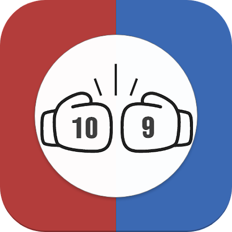
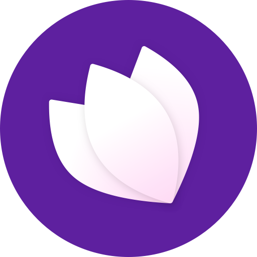

Musashi Tsunoda
Web application engineer
I am a web application engineer in Tokyo. I love product development and I am interested in the process of creating products that people love.
My ancestors were samurai, and my family does martial arts, so in my free time I do kickboxing. That is why I developed a mobile app for scoring boxing matches.
Work experience
Apr. 2021 - Mar. 2023
Full-stack Developer - e-ize Co. Ltd.
I worked as a full-stack engineer on a service that made it easy to build e-commerce sites from the web.
I worked in a team of 3-5 engineers, designing, developing, testing, and maintaining the service for both the front-end and back ...
Java
JavaScript
Spring Boot
Vue.js
Nuxt.js
MySQL
Docker
Dec. 2019 - Mar. 2021
Internship - e-ize Co. Ltd.
As my first experience as a software engineer, I worked as an intern while I was finishing my master's degree.
I worked on the front-end and back-end of the service.
Java
JavaScript
Spring Boot
Vue.js
Nuxt.js
MySQL
Docker
Personal project
- 
SCORE BOX
SCORE BOX is a mobile app that allows you to create your scorecard of boxing fights. You can also share your scorecard with others.
It has been downloaded in total over 7000 on the App Store and Google Play.
You can see the posts that its users shared on Twitter with the hashtag #SCORE_BOX.
Dart
Flutter
Firebase
SQLite
- 
Mokuren
Mokuren is a Chrome extension for GitHub.
You can open the issue page in a sidebar.
I developed it with my firiends.
TypeScript
Vue.js
GCP
Cypress
Cupertiono catalog is a mobile app for Flutter developers.
You can brawse Cupertino widgets and their code examples.
Cupertino widgets are iOS-style widgets for Flutter.
Dart
Flutter
SQLite